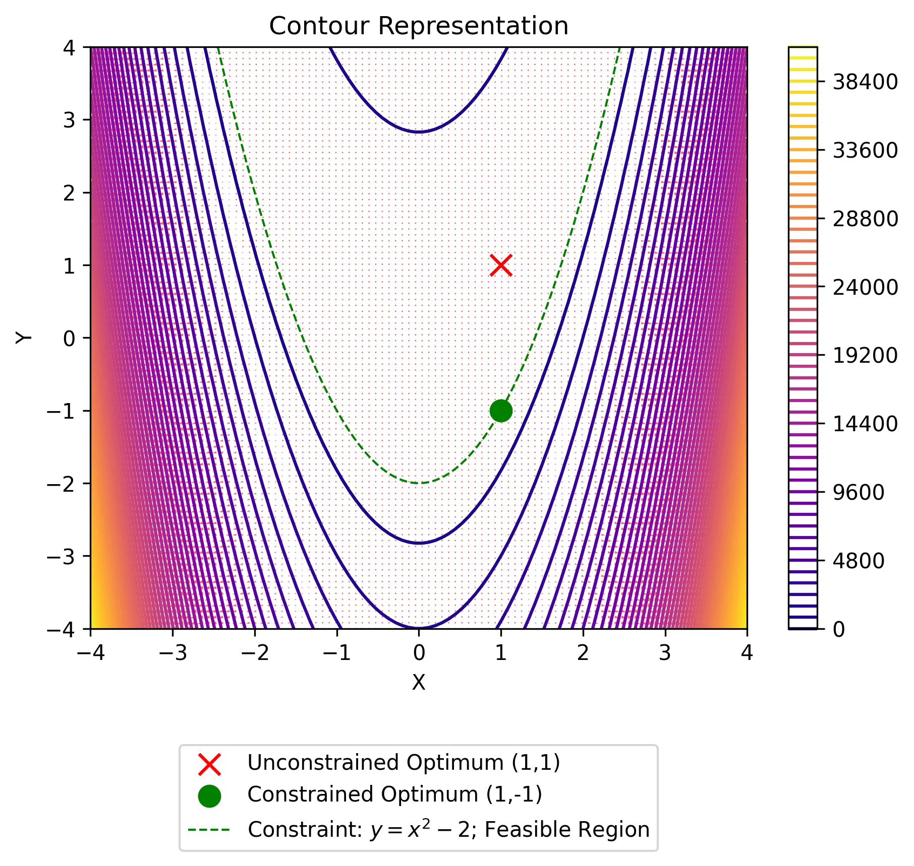
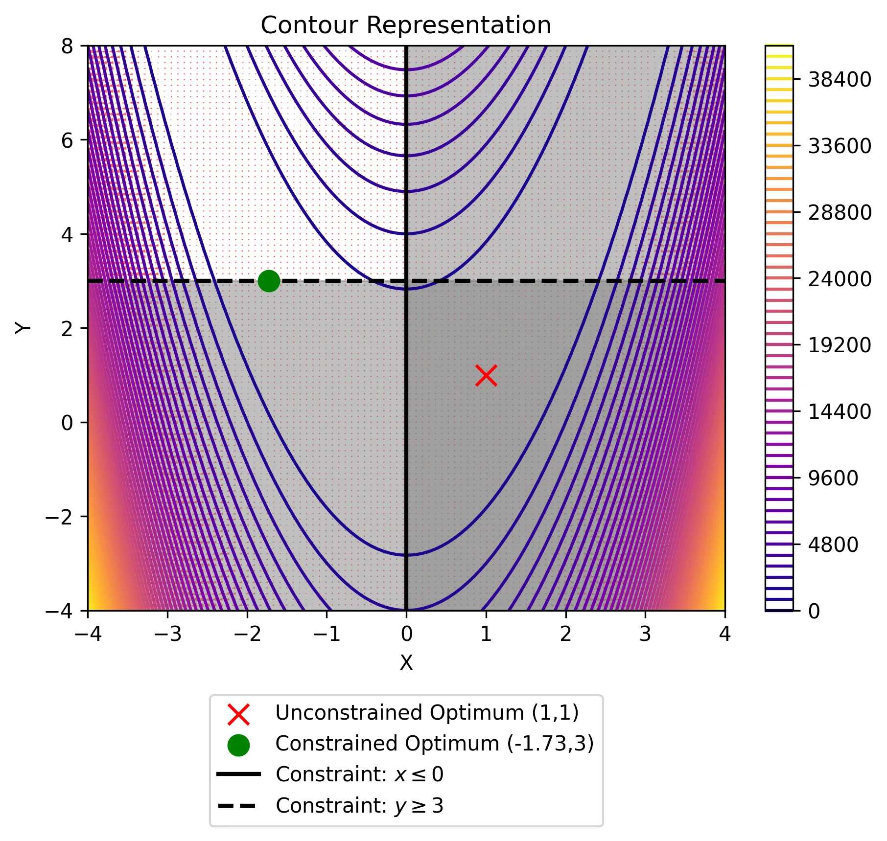

Imports and Settings
import matplotlib.pyplot as plt
import plotly.graph_objects as go
import numpy as np
import sympy as smimport matplotlib.pyplot as plt
import plotly.graph_objects as go
import numpy as np
import sympy as smThis article is the 2nd in a 3 part series. In the 1st part, we studied basic optimization theory. Now, in pt. 2, we will extend this theory to constrained optimization problems. Lastly, in pt. 3, we will apply the optimization theory covered, as well as econometric and economic theory, to solve a profit maximization problem
Consider the following problem: You want to determine how much money to invest in specific financial instruments to maximize your return on investment. However, the problem of simply maximizing your return on investment is too broad and simple of an optimization question to ask. By virtue of the simplicity, the solution is to just invest all of your money in the financial instrument has the highest probability for the highest return. Clearly this is not a good investment strategy; so, how can we improve this? By putting constraints on the investment decisions, our choice variables. For example, we can specify constraints that, to name a couple, 1) limit the amount of financial risk we are willing to entertain (see modern portfolio theory) or 2) specify the amount of our portfolio to be allocated towards each category of financial instruments (equity, bonds, derivatives, etc.) — the possibilities are endless. Notice how this problem becomes significantly more tractable as we add constraints. Despite this simple example, it helps to capture a fundamental motivation of constrained optimization:
The essence of constrained optimization is to provide unconstrained optimization problems a sense of tractability and applicability to complex real world problems.
Constrained optimization is defined as “the process of optimizing an objective function with respect to some variables in the presence of constraints on those variables.”1 The process of adding constraints on the variables transforms an unconstrained and, perhaps, intractable optimization problem into one which can help model and solve a real world problem. However, the addition of constraints can turn a simple optimization problem into a problem that is no longer trivial. In this post, we will dive into some of the techniques that we can add to our toolbox to extend the unconstrained optimization theory, learned in part 1 of this series, to now solve constrained optimization problems.
In part 1, we covered basic optimization theory — including 1) setting up and solving a simple single variable optimization problem analytically, 2) iterative optimization schemes — namely, gradient descent & Newton’s Method, and 3) implementing Newton’s method by hand and in python for a multi-dimensional optimization problem. This article is designed to be accessible for those who are already familiar with the content covered in part 1.
A mathematical optimization problem can be formulated abstractly as such:
\[ \begin{equation} \begin{aligned} \min_{\mathbf{x}} \quad& f(\mathbf{x}), \mathbf{x}=[x_1,x_2,\dots,x_n]^T \in \mathbb{R}^n \\ \text{subject to} \quad & g_j(\mathbf{x}) \le 0, j=1,2,\dots,m \\ & h_j(\mathbf{x}) = 0, j=1,2,\dots,r \end{aligned} \tag{1} \end{equation} \]
where we choose real values of the vector \(\mathbf{x}\) that minimize the objective function \(f(\mathbf{x})\) (or maximize -\(f(\mathbf{x})\)) subject to the inequality constraints \(g(x)\) and equality constraints \(h(x)\). In part 1, we discussed how to solve these problems in the absence of \(g(x)\) and \(h(x)\) and now we will introduce these back into our optimization problem. First, let’s succinctly recap how to implement Newton’s method for unconstrained problems.
Recall that we can approximate the first order necessary condition of a minimum using a Taylor Series expansion:
\[ \begin{equation} 0 = \nabla f(\mathbf{x}^*)=\nabla f(\mathbf{x}_k + \Delta) = \nabla f(\mathbf{x}_k) + \mathbf{H}(\mathbf{x}_k)\Delta\Rightarrow \Delta = -\mathbf{H}^{-1}(\mathbf{x}_k)\nabla f(\mathbf{x}_k) \tag{2} \end{equation} \]
where \(\mathbf{H}(\mathbf{x})\) and \(\nabla f(\mathbf{x})\) denote the Hessian and gradient of \(f(\mathbf{x})\), respectively. Each iterative addition of delta, \(\Delta\), is an expected better approximation of the optimal values \(\mathbf{x}^*\). Thus, each iterative step using the NM can be represented as follows:
\[ \begin{equation} \mathbf{x}_{k+1} = \mathbf{x}_k -\mathbf{H}^{-1}(\mathbf{x}_k)\nabla f(\mathbf{x}_k) \tag{3} \end{equation} \]
We do this scheme until we reach convergence across one or more of the following criteria:
\[ \begin{equation} \begin{aligned} &\text{Criteria 1: } \lVert \mathbf{x}_k - \mathbf{x}_{k-1} \rVert < \epsilon_1 \\[6pt] &\text{Criteria 2: } \lvert f(\mathbf{x}_k) - f(\mathbf{x}_{k-1}) \rvert < \epsilon_2 \end{aligned} \tag{4} \end{equation} \]
Putting this into python code, we make use of SymPy — a python library for symbolic mathematics — and create generalizable functions to compute the gradient, compute the Hessian, and implement Newton’s method for an n-dimensional function (see part 1 for full recap) and, leveraging these functions, we can solve an unconstrained optimization problem as follows:
def get_gradient(
function: sm.Expr,
symbols: list[sm.Symbol],
x0: dict[sm.Symbol, float], # Add x0 as argument
) -> np.ndarray:
"""
Calculate the gradient of a function at a given point.
Args:
function (sm.Expr): The function to calculate the gradient of.
symbols (list[sm.Symbol]): The symbols representing the variables in the function.
x0 (dict[sm.Symbol, float]): The point at which to calculate the gradient.
Returns:
numpy.ndarray: The gradient of the function at the given point.
"""
d1 = {}
gradient = np.array([])
for i in symbols:
d1[i] = sm.diff(function, i, 1).evalf(subs=x0) # add evalf method
gradient = np.append(gradient, d1[i])
return gradient.astype(np.float64) # Change data type to float
def get_hessian(
function: sm.Expr,
symbols: list[sm.Symbol],
x0: dict[sm.Symbol, float],
) -> np.ndarray:
"""
Calculate the Hessian matrix of a function at a given point.
Args:
function (sm.Expr): The function for which the Hessian matrix is calculated.
symbols (list[sm.Symbol]): The list of symbols used in the function.
x0 (dict[sm.Symbol, float]): The point at which the Hessian matrix is evaluated.
Returns:
numpy.ndarray: The Hessian matrix of the function at the given point.
"""
d2 = {}
hessian = np.array([])
for i in symbols:
for j in symbols:
d2[f"{i}{j}"] = sm.diff(function, i, j).evalf(subs=x0)
hessian = np.append(hessian, d2[f"{i}{j}"])
hessian = np.array(np.array_split(hessian, len(symbols)))
return hessian.astype(np.float64)
def newtons_method(
function: sm.Expr,
symbols: list[sm.Symbol],
x0: dict[sm.Symbol, float],
iterations: int = 100,
tolerance: float = 10e-5,
verbose: int = 1,
) -> dict[sm.Symbol, float] or None:
"""
Perform Newton's method to find the solution to the optimization problem.
Args:
function (sm.Expr): The objective function to be optimized.
symbols (list[sm.Symbol]): The symbols used in the objective function.
x0 (dict[sm.Symbol, float]): The initial values for the symbols.
iterations (int, optional): The maximum number of iterations. Defaults to 100.
tolerance (float, optional): Threshold for determining convergence.
verbose (int, optional): Control verbosity of output. 0 is no output, 1 is full output.
Returns:
dict[sm.Symbol, float] or None: The solution to the optimization problem, or None if no solution is found.
"""
x_star = {}
x_star[0] = np.array(list(x0.values()))
if verbose != 0:
print(f"Starting Values: {x_star[0]}")
for i in range(iterations):
gradient = get_gradient(function, symbols, dict(zip(x0.keys(), x_star[i])))
hessian = get_hessian(function, symbols, dict(zip(x0.keys(), x_star[i])))
x_star[i + 1] = x_star[i].T - np.linalg.inv(hessian) @ gradient.T
if np.linalg.norm(x_star[i + 1] - x_star[i]) < tolerance:
solution = dict(zip(x0.keys(), [float(x) for x in x_star[i + 1]]))
if verbose != 0:
print(
f"\nConvergence Achieved ({i+1} iterations): Solution = {solution}"
)
break
else:
solution = None
if verbose != 0:
print(f"Step {i+1}: {x_star[i+1]}")
return solutionx, y = sm.symbols("x y")
Gamma = [x, y]
objective = 100 * (y - x**2) ** 2 + (1 - x) ** 2 # Objective function
Gamma0 = {x: -1.2, y: 1} # Initial Guess
newtons_method(objective, Gamma, Gamma0)Starting Values: [-1.2 1. ]
Step 1: [-1.1752809 1.38067416]
Step 2: [ 0.76311487 -3.17503385]
Step 3: [0.76342968 0.58282478]
Step 4: [0.99999531 0.94402732]
Step 5: [0.9999957 0.99999139]
Convergence Achieved (6 iterations): Solution = {x: 0.9999999999999999, y: 0.9999999999814724}{x: 0.9999999999999999, y: 0.9999999999814724}If all of the material reviewed above feels extremely foreign, then I recommend taking a look at part 1 for a full recap. Without further ado, let’s dive into implementing constraints in our optimization problems.
Note: All of the following constrained optimization techniques can and should be incorporated w/ gradient descent algorithms when applicable!
As we discussed above there are two possible constraints on an objective function — equality and inequality constraints. Note that there are varying methodologies out there for dealing with each type of constraint with varying pros and cons. See 2 for a further discussion of different methodologies. Nevertheless, we will hone our focus in on two methodologies, one for equality and one for inequality constraints, that I believe are robust in their performance, easy to grasp for newcomers, and easily integrated together into one cohesive problem.
First, we will address optimization problems with equality constraints in our optimization problem. That is, optimization problems that take the form:
\[ \begin{equation} \begin{aligned} \min_{\mathbf{x}} \quad& f(\mathbf{x}), \mathbf{x}=[x_1,x_2,\dots,x_n]^T \in \mathbb{R}^n \\ \text{subject to} \quad& h_j(\mathbf{x}) = 0, j=1,2,\dots,r \end{aligned} \tag{5} \end{equation} \]
Suppose we are working with the Rosenbrock’s Parabolic Valley, as in part 1, but now with the equality constraint that \(x^2 - y = 2\):
\[ \begin{equation} \begin{aligned} \min_{\Gamma} \quad& 100(y-x^2)^2+(1-x)^2, \Gamma = \begin{bmatrix} x \\ y \end{bmatrix} \in \mathbb{R}^2 \\ \text{subject to} \quad& x^2-y =2 \Leftrightarrow x^2-y-2=0 \end{aligned} \tag{6} \end{equation} \]
Note that, for simplicity and consistency, the equality constraints should be written such that they are equal to zero. Now our optimization problem looks like:
# Define the Rosenbrock function
def rosenbrock(x, y):
return 100 * (y - x**2) ** 2 + (1 - x) ** 2
# Create the grid
x = np.linspace(-4, 4, 100)
y = np.linspace(-4, 4, 100)
X, Y = np.meshgrid(x, y)
Z = rosenbrock(X, Y)
# Create constraint curve points
x_constraint = np.linspace(-np.sqrt(6), np.sqrt(6), 500)
y_constraint = x_constraint**2 - 2
z_constraint = rosenbrock(x_constraint, y_constraint)
# Create the figure
fig = go.Figure()
# Add the Rosenbrock surface
fig.add_trace(
go.Surface(
x=X,
y=Y,
z=Z,
colorscale='plasma',
opacity=0.8,
name='Rosenbrocks Surface',
colorbar=dict(x=-0.15),
showlegend=True
)
)
# Add the constraint curve
fig.add_trace(
go.Scatter3d(
x=x_constraint,
y=y_constraint,
z=z_constraint,
mode='lines',
line=dict(color='green', width=5),
name='Constraint: y = x^2 - 2; feasible region'
)
)
# Add the unconstrained optimum point
fig.add_trace(
go.Scatter3d(
x=[1],
y=[1],
z=[rosenbrock(1, 1)],
mode='markers',
marker=dict(size=6, color='red', symbol='cross'),
name='Unconstrained Optimum (1,1)'
)
)
# Add the constrained optimum point
fig.add_trace(
go.Scatter3d(
x=[1],
y=[-1],
z=[rosenbrock(1, -1)],
mode='markers',
marker=dict(size=6, color='green'),
name='Constrained Optimum (1,-1)'
)
)
# Update the layout
fig.update_layout(
title='Rosenbrocks Parabolic Valley with Equality Constraints',
scene=dict(
xaxis_title='X',
yaxis_title='Y',
zaxis_title='Z',
camera=dict(
eye=dict(x=1.5, y=1.5, z=1.5)
)
),
showlegend=True,
)
fig.write_html("data/eqc_rosenbrocks_viz_3d.html")# Define the Rosenbrock function
def rosenbrock(x, y):
return 100 * (y - x**2) ** 2 + (1 - x) ** 2
# Compute gradient
def grad_rosenbrock(x, y):
df_dx = -400 * x * (y - x**2) - 2 * (1 - x)
df_dy = 200 * (y - x**2)
return df_dx, df_dy
# Define the grid
x_vals = np.linspace(-4, 4, 100)
y_vals = np.linspace(-4, 4, 100)
X, Y = np.meshgrid(x_vals, y_vals)
Z = rosenbrock(X, Y)
# Compute gradients for quiver plot
dX, dY = grad_rosenbrock(X, Y)
# Define constraint: y = x^2 - 2
x_constraint = np.linspace(-np.sqrt(6), np.sqrt(6), 500)
y_constraint = x_constraint**2 - 2
# Plot contours of Rosenbrock function
plt.figure(dpi=125)
contour = plt.contour(X, Y, Z, levels=50, cmap="plasma")
plt.colorbar(contour)
# Overlay gradient field
plt.quiver(X, Y, dX, dY, color="red", alpha=0.6)
# Mark the optimization point (theoretical minimum at (1,1))
plt.scatter(
1,
1,
color="red",
marker="x",
s=100,
label="Unconstrained Optimum (1,1)",
zorder=3,
)
plt.scatter(
1,
-1,
color="green",
marker="o",
s=100,
label="Constrained Optimum (1,-1)",
zorder=3,
)
# Plot constraint curve
plt.plot(
x_constraint,
y_constraint,
color="green",
linestyle="--",
linewidth=1,
label="Constraint: $y = x^2 - 2$; Feasible Region",
)
# Labels and legend
plt.xlabel("X")
plt.ylabel("Y")
plt.title("Contour Representation")
plt.legend(loc="lower center", bbox_to_anchor=(0.5, -0.4))
plt.savefig("data/eqc_rosenbrocks_viz_contour.webp", format="webp", dpi=300, bbox_inches='tight')
where the feasible region of the optimal values lie along the intersection of the equality constraint curve and our objective function above.
Joseph-Louis Lagrange developed a method for incorporating an equality constraint directly into the objective function — creating the Lagrangian function — so that traditional approaches using first and second derivates can still be applied.34 Formally, the Lagrangian function takes the following form:
\[ \begin{equation} \begin{aligned} \mathcal{L} (\mathbf{x},\Lambda) &= f(\mathbf{x})+\sum^r_{j=1}\lambda_jh_j(\mathbf{x}), \\ \mathbf{x}&=[x_1,x_2,\dots,x_n] \\ \Lambda &= [ \lambda_1, \lambda_2, \dots,\lambda_r] \end{aligned} \tag{7} \end{equation} \]
where \(f(\mathbf{x})\) and \(h(\mathbf({x})\) are the objective function and equality constraints, respectively. \(\Lambda\) are the Lagrange multipliers that correspond to each equality constraint \(h_j\). The Lagrange multipliers are treated as new choice variables in the Lagrangian function. It just so happens that the necessary conditions for \(\mathbf{x}^*\) to be a minimum of the equality constrained problem is that \(\mathbf{x}^*\) corresponds to the stationarity points of the Lagrangian \((\mathbf{x}^*, \Lambda^*)\). That is,
\[ \begin{equation} \begin{aligned} \frac{\partial{\mathcal{L}}}{\partial{x_i}}(\mathbf{x}^*, \Lambda^*)=0, i=1,2,\dots,n \\[8pt] \frac{\partial{\mathcal{L}}}{\partial{\lambda_i}}(\mathbf{x}^*, \Lambda^*)=0, i=1,2,\dots,n \end{aligned} \tag{8} \end{equation} \]
For our above example — eq. 6 — we can write our Lagrangian function as follows:
\[ \begin{equation} \mathcal{L}(\Gamma,\lambda) = 100(y-x^2)^2+(1-x)^2+\lambda(x^2-y-2) \tag{9} \end{equation} \]
We can then solve this Lagrangian using Newton’s method (or gradient descent!), but now including the Lagrange multipliers as additional choice variables.
x, y, λ = sm.symbols("x y λ")
lagrangian = 100 * (y - x**2) ** 2 + (1 - x) ** 2 + λ * (x**2 - y - 2)
Gamma = [x, y, λ]
Gamma0 = {x: -1.2, y: 1, λ: 1}
newtons_method(lagrangian, Gamma, Gamma0)Starting Values: [-1.2 1. 1. ]
Step 1: [ -1.17555556 -0.61866667 -400. ]
Step 2: [ 0.7677616 -5.1870237 -400. ]
Step 3: [ 0.76806868 -1.4100706 -400. ]
Step 4: [ 0.99999563 -1.05379886 -400. ]
Step 5: [ 0.999996 -1.000008 -400. ]
Convergence Achieved (6 iterations): Solution = {x: 0.9999999999999999, y: -1.0000000000160152, λ: -400.0}{x: 0.9999999999999999, y: -1.0000000000160152, λ: -400.0}One can easily verify that the solution satisfies our equality constraint. And there you have it! That wasn’t too bad, right? This method can be extended to add any number of equality constraints — just add another Lagrange multiplier. Let’s move on now to the incorporation of inequality constraints.
Now we will address optimization problems with inequality constraints in our optimization problem. That is, optimization problems that take the form:
\[ \begin{equation} \begin{aligned} \min_{\mathbf{x}} \quad& f(\mathbf{x}), \mathbf{x}=[x_1,x_2,\dots,x_n]^T \in \mathbb{R}^n \\ \text{subject to} \quad& g_j(\mathbf{x}) \le 0, j=1,2,\dots,m \end{aligned} \tag{10} \end{equation} \]
Suppose, again, we are working with Rosenbrock’s Parabolic Valley but now with the inequality constraints \(x \le 0\) and \(y \ge 3\):
\[ \begin{equation} \begin{aligned} \min_{\Gamma} \quad& 100(y-x^2)^2+(1-x)^2, \Gamma = \begin{bmatrix} x \\ y \end{bmatrix} \in \mathbb{R}^2 \\ \text{subject to} \quad& x \le 0, \quad y \ge 3 \end{aligned} \tag{11} \end{equation} \]
Now our optimization problem looks like:
# Define the Rosenbrock function
def rosenbrock(x, y):
return 100 * (y - x**2) ** 2 + (1 - x) ** 2
# Create the grid
x = np.linspace(-4, 4, 100)
y = np.linspace(-4, 8, 100)
X, Y = np.meshgrid(x, y)
Z = rosenbrock(X, Y)
# Create the figure
fig = go.Figure()
# Add the Rosenbrock surface
fig.add_trace(
go.Surface(
x=X,
y=Y,
z=Z,
colorscale='plasma',
opacity=0.8,
name='Rosenbrocks Parabolic Valley',
colorbar=dict(x=-0.15),
showlegend=True
)
)
# Create constraint planes
# For x <= 0 constraint
yc = np.linspace(-4, 8, 50)
zc = np.linspace(0, np.max(Z), 50)
YC, ZC = np.meshgrid(yc, zc)
XC = np.zeros_like(YC) # x = 0 plane
# For y >= 3 constraint
xc = np.linspace(-4, 4, 50)
zc = np.linspace(0, np.max(Z), 50)
XC2, ZC2 = np.meshgrid(xc, zc)
YC2 = 3 * np.ones_like(XC2) # y = 3 plane
# Add constraint planes
fig.add_trace(
go.Surface(
x=XC,
y=YC,
z=ZC,
colorscale=[[0, 'black'], [1, 'black']],
opacity=0.3,
name='Constraint: x ≤ 0',
showscale=False,
showlegend=True,
)
)
fig.add_trace(
go.Surface(
x=XC2,
y=YC2,
z=ZC2,
colorscale=[[0, 'black'], [1, 'black']],
opacity=0.6,
name='Constraint: y ≥ 3',
showscale=False,
showlegend=True,
)
)
# Add the unconstrained optimum point
fig.add_trace(
go.Scatter3d(
x=[1],
y=[1],
z=[rosenbrock(1, 1)],
mode='markers',
marker=dict(size=6, color='red', symbol='cross'),
name='Unconstrained Optimum (1,1)'
)
)
# Add the constrained optimum point (approximately at -1.73, 3)
fig.add_trace(
go.Scatter3d(
x=[-1.73],
y=[3],
z=[rosenbrock(-1.73, 3)],
mode='markers',
marker=dict(size=6, color='green'),
name='Constrained Optimum (-1.73,3)'
)
)
# Define box edges for feasible region
box_edges = [
[-4, 3, 0], [-4, 3, np.max(Z)], [0, 3, np.max(Z)], [0, 3, 0],
[-4, 8, 0], [-4, 8, np.max(Z)], [0, 8, np.max(Z)], [0, 8, 0]
]
box_faces = [
(0, 1, 2, 3), (4, 5, 6, 7), (0, 1, 5, 4), (2, 3, 7, 6), (0, 3, 7, 4), (1, 2, 6, 5)
]
for i, face in enumerate(box_faces):
x = [box_edges[i][0] for i in face] + [box_edges[face[0]][0]]
y = [box_edges[i][1] for i in face] + [box_edges[face[0]][1]]
z = [box_edges[i][2] for i in face] + [box_edges[face[0]][2]]
if i == 0:
show_legend=True
else:
show_legend=False
fig.add_trace(
go.Scatter3d(
x=x, y=y, z=z, mode='lines', name="Feasible Region",
line=dict(color='lightgreen', width=4), showlegend=show_legend
)
)
# Update the layout
fig.update_layout(
title='Rosenbrocks Parabolic Valley with Inequality Constraints',
scene=dict(
xaxis_title='X',
yaxis_title='Y',
zaxis_title='Z',
camera=dict(
eye=dict(x=1.5, y=1.5, z=1.5)
)
),
showlegend=True
)
fig.write_html("data/ineqc_rosenbrocks_viz_3d.html")# Define the Rosenbrock function
def rosenbrock(x, y):
return 100 * (y - x**2) ** 2 + (1 - x) ** 2
# Compute gradient
def grad_rosenbrock(x, y):
df_dx = -400 * x * (y - x**2) - 2 * (1 - x)
df_dy = 200 * (y - x**2)
return df_dx, df_dy
# Define the grid
x_vals = np.linspace(-4, 4, 100)
y_vals = np.linspace(-4, 8, 100)
X, Y = np.meshgrid(x_vals, y_vals)
Z = rosenbrock(X, Y)
# Compute gradients for quiver plot
dX, dY = grad_rosenbrock(X, Y)
# Plot contours of Rosenbrock function
plt.figure(dpi=125)
contour = plt.contour(X, Y, Z, levels=50, cmap="plasma")
plt.colorbar(contour)
# Overlay gradient field
plt.quiver(X, Y, dX, dY, color="red", alpha=0.6)
# Mark the optimization points
plt.scatter(
1,
1,
color="red",
marker="x",
s=100,
label="Unconstrained Optimum (1,1)",
zorder=3,
)
plt.scatter(
-1.73,
3,
color="green",
marker="o",
s=100,
label="Constrained Optimum (-1.73,3)",
zorder=3,
)
# Plot constraint lines
plt.axvline(
0, color="black", linestyle="-", linewidth=2, label="Constraint: $x \leq 0$"
)
plt.axhline(
3,
color="black",
linestyle="--",
linewidth=2,
label="Constraint: $y \geq 3$",
)
# Shade infeasible regions in gray
plt.fill_betweenx(
y_vals, 0, 4, color="gray", alpha=0.5
) # Shade region where x > 0
plt.fill_between(
x_vals, -4, 3, color="gray", alpha=0.5
) # Shade region where y < 3
# Labels and legend
plt.xlabel("X")
plt.ylabel("Y")
plt.title("Contour Representation")
plt.legend(loc="lower center", bbox_to_anchor=(0.5, -0.4))
plt.savefig("data/ineqc_rosenbrocks_viz_contour.webp", format="webp", dpi=300, bbox_inches='tight')
where the feasible region lies in the quadrant bounded by the constraints that is marked by the green box in the 3D plot or the unshaded region in the contour plot.
Because these constraints do not have a strict equality, our ability to directly include them into the objective function is not as straightforward. However, we can get creative — what we can do is augment our objective function to include a “barrier” in the objective function that penalizes values of the solution that approach the bounds of the inequality constraints. These class of methods are known as “interior-point methods” or “barrier methods.”56 Like the Lagrangian function, we can transform our original constrained optimization problem into an unconstrained optimization problem by incorporating barrier functions (the logarithmic barrier function in our case) that can be solved using traditional methods— thereby creating the barrier function. Formally, the logarithmic barrier function is characterized by:
\[ \begin{equation} \begin{aligned} \mathcal{B} (\mathbf{x},\rho) &= f(\mathbf{x})- \rho\sum^m_{j=1}\log(c_j(\mathbf{x})), \\ \mathbf{x}&=[x_1,x_2,\dots,x_n] \\[6pt] c_j(\mathbf{x}) &= \begin{cases} g_j(\mathbf{x}), & g_j(\mathbf{x}) \geq 0 \\ -g_j(\mathbf{x}), & g_j(\mathbf{x}) < 0 \end{cases} \end{aligned} \tag{12} \end{equation} \]
where \(\rho\) is a small positive scalar — known as the barrier parameter. As \(\rho \rightarrow 0\), the solution of the barrier function \(\mathcal{B}(\mathbf{X},\rho)\) should converge to the solution of our original constrained optimization function. Note, the \(c(x)\) states that depending on how we formulate our inequality constraints (greater than or less than zero) will dictate whether we use the negative or positive of that constraint. We know that \(y=\log(x)\) is undefined for \(x \le 0\), thus we need to formulate our constraint to always be \(\ge 0\).
How exactly does the barrier method work, you may ask? To begin with, when using the barrier method, we must choose starting values that are in the feasible region. As the optimal values approach the “barrier” outlined by the constraint, this method relies on the fact that the logarithmic function approaches negative infinity as the value approaches zero, thereby penalizing the objective function value. As \(\rho \rightarrow 0\), the penalization decreases (see figure directly below) and we converge to the solution. However, it is necessary to start with a sufficiently large \(\rho\) so that the penalization is large enough to prevent “jumping” out of the barriers. Therefore, the algorithm has one extra loop than Newton’s method alone — namely, we choose a starting value \(\rho\), optimize the barrier function using Newton’s method, then update \(\rho\) by slowly decreasing it (\(\rho \rightarrow 0\)), and repeat until convergence.
# Defining surface and axes
x = np.linspace(0.01, 20, 1000)
y = np.log(x)
x2 = np.linspace(0.000000000000000000001, 20, 1000)
y2 = 0.1 * np.log(x2)
fig = plt.figure(dpi=125)
ax = fig.add_subplot(1, 1, 1)
ax.spines["left"].set_position("zero")
ax.spines["bottom"].set_position("zero")
ax.spines["right"].set_color("none")
ax.spines["top"].set_color("none")
ax.set_yticks([-4, -3, -2, -1, 1, 2, 3])
ax.set_xticks([2, 4, 6, 8, 10, 12, 14, 16, 18, 20])
ax.text(x=16, y=3.2, s="ρ = 1")
ax.text(x=16, y=0.6, s="ρ = 0.1")
# plot the function
plt.plot(x, y, "r")
plt.plot(x, y2, "g")
plt.savefig("data/logarithmic_barrier_function.webp", format="webp", dpi=300)
Revisiting our example above — eq. 11 — we can write our barrier function as follows:
\[ \begin{equation} \mathcal{B} (\Gamma,\rho)=100(y-x^2)^2+(1-x)^2-\rho\log((y-3)(-x)) \tag{13} \end{equation} \]
Recall that \(\log(a) + \log(b) = \log(ab)\) and our one constraint \(x \le 0 \rightarrow -x \ge 0\). We must then update our code to accommodate the barrier method algorithm:
def constrained_newtons_method(
function: sm.Expr,
symbols: list[sm.Symbol],
x0: dict[sm.Symbol, float],
rho_steps: int = 100,
discount_rate: float = 0.9,
newton_method_iterations: int = 100,
tolerance: float = 10e-5,
) -> dict[sm.Symbol, float] | None:
"""
Performs constrained Newton's method to find the optimal solution of a function subject to constraints.
Args:
function (sm.Expr): The function to optimize.
symbols (list[sm.Symbol]): The symbols used in the function.
x0 (dict[sm.Symbol, float]): The initial values for the symbols.
rho_steps (int, optional): The number of steps to update rho. Defaults to 100.
discount_rate (float, optional): The scalar to discount rho by at each step. Default is 0.9.
newton_method_iterations (int, optional): The maximum number of iterations in Newton Method internal loop. Defaults to 100.
tolerance (float, optional): Threshold for determining convergence.
Returns:
dict[sm.Symbol, float] or None: The optimal solution if convergence is achieved, otherwise None.
"""
rho = list(x0.keys())[-1]
optimal_solutions = []
optimal_solutions.append(x0)
for step in range(rho_steps):
if step % 10 == 0:
print("\n" + "===" * 20)
print(f"Step {step} w/ rho={optimal_solutions[step][rho]}")
print("===" * 20 + "\n")
print(f"Current solution: {optimal_solutions[step]}")
function_eval = function.evalf(subs={rho: optimal_solutions[step][rho]})
values = optimal_solutions[step].copy()
del values[rho]
optimal_solution = newtons_method(
function_eval,
symbols[:-1],
values,
iterations=newton_method_iterations,
tolerance=tolerance,
verbose=0,
)
optimal_solutions.append(optimal_solution)
# Check for overall convergence
current_solution = np.array(
[v for k, v in optimal_solutions[step].items() if k != rho]
)
previous_solution = np.array(
[v for k, v in optimal_solutions[step - 1].items() if k != rho]
)
if np.linalg.norm(current_solution - previous_solution) < tolerance:
overall_solution = optimal_solutions[step]
del overall_solution[rho]
print(
f"\n Overall Convergence Achieved ({step} steps): Solution = {overall_solution}\n"
)
break
else:
overall_solution = None
# Update rho
optimal_solutions[step + 1][rho] = (
discount_rate * optimal_solutions[step][rho]
)
return overall_solutionWe can now solve the Barrier function with the code above (Note: Make sure starting values are in the feasible range of inequality constraints & you may have to increase the starting value of rho if you jump out of inequality constraints):
x, y, ρ = sm.symbols("x y ρ")
Barrier_objective = (
100 * (y - x**2) ** 2 + (1 - x) ** 2 - ρ * sm.log((-x) * (y - 3))
)
Gamma = [x, y, ρ] # Function requires last symbol to be ρ!
Gamma0 = {x: -15, y: 15, ρ: 10}
constrained_newtons_method(Barrier_objective, Gamma, Gamma0)
============================================================
Step 0 w/ rho=10
============================================================
Current solution: {x: -15, y: 15, ρ: 10}
============================================================
Step 10 w/ rho=3.4867844010000004
============================================================
Current solution: {x: -2.5560638739383226, y: 6.538936213074978, ρ: 3.4867844010000004}
============================================================
Step 20 w/ rho=1.2157665459056928
============================================================
Current solution: {x: -2.00206856969136, y: 4.014933436132988, ρ: 1.2157665459056928}
============================================================
Step 30 w/ rho=0.423911582752162
============================================================
Current solution: {x: -1.819669920847985, y: 3.318590750462763, ρ: 0.423911582752162}
============================================================
Step 40 w/ rho=0.14780882941434598
============================================================
Current solution: {x: -1.7603487434012557, y: 3.106535549353001, ρ: 0.14780882941434598}
============================================================
Step 50 w/ rho=0.05153775207320116
============================================================
Current solution: {x: -1.7403336727177194, y: 3.0365870376773034, ρ: 0.05153775207320116}
============================================================
Step 60 w/ rho=0.017970102999144335
============================================================
Current solution: {x: -1.7334419701953157, y: 3.012688886348692, ρ: 0.017970102999144335}
============================================================
Step 70 w/ rho=0.00626578748217798
============================================================
Current solution: {x: -1.731049610770016, y: 3.0044153673096443, ρ: 0.00626578748217798}
============================================================
Step 80 w/ rho=0.0021847450052839253
============================================================
Current solution: {x: -1.7302169664789209, y: 3.0015385348469783, ρ: 0.0021847450052839253}
Overall Convergence Achieved (86 steps): Solution = {x: -1.7300082149986147, y: 3.0008175060422393}
{x: -1.7300082149986147, y: 3.0008175060422393}Again, one can verify the solution satisfies the inequality constraints specified. And there you have it. We have now tackled inequality constraints in our optimization problems. To wrap up, let’s put everything together and move on to tackling constrained optimization problems with mixed constraints — which is simply the combination of what we have done above.
Let’s now solve our optimization problem by combining both the equality and inequality constraints from above. That is, we want to solve an optimization of the form:
\[ \begin{equation} \begin{aligned} \min_{\mathbf{x}} \quad& f(\mathbf{x}), \mathbf{x}=[x_1,x_2,\dots,x_n]^T \in \mathbb{R}^n \\ \text{subject to} \quad & g_j(\mathbf{x}) \le 0, j=1,2,\dots,m \\ & h_j(\mathbf{x}) = 0, j=1,2,\dots,r \end{aligned} \tag{14} \end{equation} \]
All we have to do is combine the Lagrangian and the Barrier functions into one function. Thus, we can create a generalizable function, call it O, for dealing with optimization problems that have both equality and inequality constraints:
\[ \begin{equation} \begin{aligned} \mathcal{O} (\mathbf{x},\Lambda,\rho) &= f(\mathbf{x}) + \sum^r_{j=1}\lambda_jh_j(\mathbf{x})- \rho\sum^m_{j=1}\log(c_j(\mathbf{x})), \\ \mathbf{x}&=[x_1,x_2,\dots,x_n] \\[6pt] \Lambda &= [\lambda_1,\lambda_2,\dots,\lambda_r] \\[6pt] c_j(\mathbf{x}) &= \begin{cases} g_j(\mathbf{x}), & g_j(\mathbf{x}) \geq 0 \\ -g_j(\mathbf{x}), & g_j(\mathbf{x}) < 0 \end{cases} \end{aligned} \tag{15} \end{equation} \]
where, as before, \(\Lambda\) is the vector of Lagrange multipliers and \(\rho\) is the barrier parameter. Thus, combining our constrained (Eq. 6) and unconstrained problems from above (Eq. 11), we can formulate our mixed constrained optimization problem as follows:
\[ \begin{equation} \begin{aligned} \mathcal{O} (\Gamma,\Lambda,\rho) &= 100(y-x^2)^2+(1-x)^2+\lambda(x^2-y-2)-\rho \times \log((y-3)(-x)) \end{aligned} \tag{16} \end{equation} \]
In python,
x, y, λ, ρ = sm.symbols("x y λ ρ")
combined_objective = (
100 * (y - x**2) ** 2
+ (1 - x) ** 2
+ λ * (x**2 - y - 2)
- ρ * sm.log((-x) * (y - 3))
)
Gamma = [x, y, λ, ρ] # Function requires last symbol to be ρ!
Gamma0 = {x: -15, y: 15, λ: 0, ρ: 10}
constrained_newtons_method(combined_objective, Gamma, Gamma0)
============================================================
Step 0 w/ rho=10
============================================================
Current solution: {x: -15, y: 15, λ: 0, ρ: 10}
============================================================
Step 10 w/ rho=3.4867844010000004
============================================================
Current solution: {x: -2.911155473877435, y: 6.474826193028229, λ: -401.114934869844, ρ: 3.4867844010000004}
============================================================
Step 20 w/ rho=1.2157665459056928
============================================================
Current solution: {x: -2.4582740622150223, y: 4.043111364959145, λ: -401.295021570133, ρ: 1.2157665459056928}
============================================================
Step 30 w/ rho=0.423911582752162
============================================================
Current solution: {x: -2.310667350466369, y: 3.339183604320644, λ: -401.3886663345824, ρ: 0.423911582752162}
============================================================
Step 40 w/ rho=0.14780882941434598
============================================================
Current solution: {x: -2.261672361877591, y: 3.1151618724636267, λ: -401.42609723798665, ρ: 0.14780882941434598}
============================================================
Step 50 w/ rho=0.05153775207320116
============================================================
Current solution: {x: -2.24494394050215, y: 3.039773295995405, λ: -401.43976419689034, ρ: 0.05153775207320116}
============================================================
Step 60 w/ rho=0.017970102999144335
============================================================
Current solution: {x: -2.239156451425808, y: 3.013821613961592, λ: -401.444605578839, ρ: 0.017970102999144335}
============================================================
Step 70 w/ rho=0.00626578748217798
============================================================
Current solution: {x: -2.2371439183808537, y: 3.004812911376953, λ: -401.4463029817175, ρ: 0.00626578748217798}
============================================================
Step 80 w/ rho=0.0021847450052839253
============================================================
Current solution: {x: -2.236443040019997, y: 3.0016774712330747, λ: -401.4468959275436, ρ: 0.0021847450052839253}
Overall Convergence Achieved (87 steps): Solution = {x: -2.236247356060529, y: 3.000802237482949, λ: -401.44706163498415}
{x: -2.236247356060529, y: 3.000802237482949, λ: -401.44706163498415}And we can again verify this solution satisfies our contraints!
Phew. Take a deep breath — you earned it. Hopefully at this point you should have a much better understanding of the techniques to incorporate constraints into your optimization problems. We are still just brushing the surface of the different tools and techniques utilized in mathematical optimization.
Stay tuned for part 3 of this series, the final part, where we will apply the optimization material learned thus far alongside econometric & economic theory to solve a profit maximization problem. It is my goal that part 3 will bring home everything we have covered and show a practical use case. As usual, I hope you have enjoyed reading this much as much I have enjoyed writing it!
Access all the code via this GitHub Repo.
I appreciate you reading my post! My posts primarily explore real-world and theoretical applications of econometric and statistical/machine learning techniques, but also whatever I am currently interested in or learning 😁. At the end of the day, I write to learn! I hope to make complex topics slightly more accessible to all.https://en.wikipedia.org/wiki/Constrained_optimization↩︎
Snyman, J. A., & Wilke, D. N. (2019). Practical mathematical optimization: Basic optimization theory and gradient-based algorithms (2nd ed.). Springer.↩︎
Snyman, J. A., & Wilke, D. N. (2019). Practical mathematical optimization: Basic optimization theory and gradient-based algorithms (2nd ed.). Springer.↩︎
https://en.wikipedia.org/wiki/Lagrange_multiplier↩︎
https://en.wikipedia.org/wiki/Interior-point_method↩︎
https://en.wikipedia.org/wiki/Barrier_function↩︎